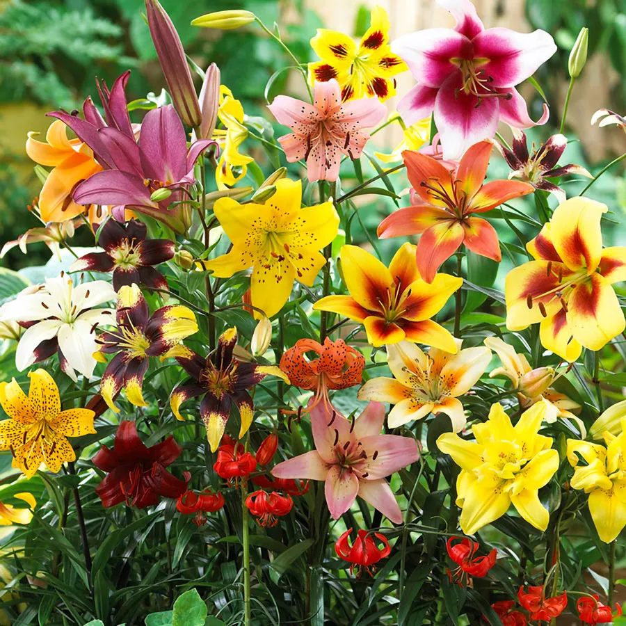
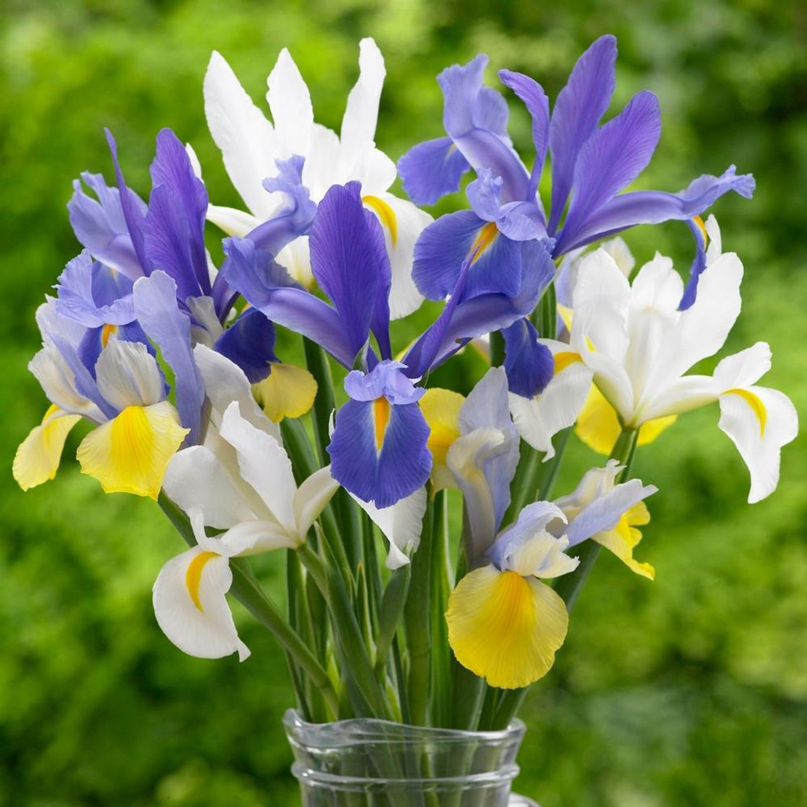

Վարդ — Ամենահայտնի սերը խորհրդանշող ծաղիկն է, որը տարբեր գույներով ունի տարբեր նշանակություններ (կարմիրը՝ սեր, սպիտակը՝ մաքրություն)

Շուշան — Հաճախ ասոցացվում է մաքրության և վերածննդի հետ, հատկապես սպիտակ շուշանը կրոնական խորհրդանիշ է։
Կակաչները — Գարնան առաջին բերանդներից մեկն է, որը խորհրդանշում է սեր և նոր սկիզբ։

Հոլանդական իրիս — Նրբագեղ կապույտ կամ մանուշակագույն ծաղիկ է, որը հաճախ օգտագործվում է հարսանեկան կոմպոզիցիաներում՝ խորհրդանշելով հավատարմություն և հույս։